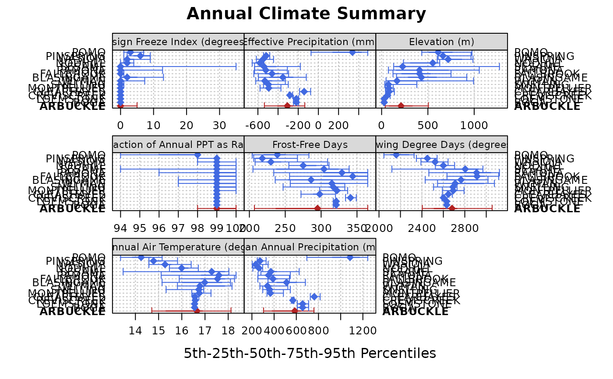
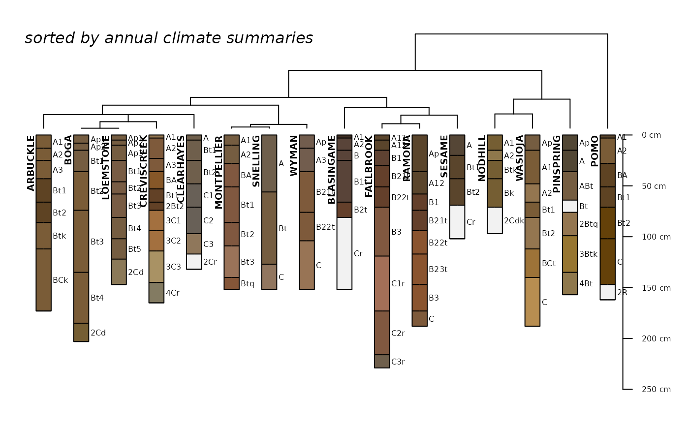

Annual climate summaries for soil series, based on latticeExtra::segplot, based on 5th, 25th, 50th, 75th, and 95th percentiles. Input data should be from soilDB::fetchOSD.
vizAnnualClimate(climate.data, IQR.cex = 1, s = NULL, s.col = "firebrick", ...)Annual climate summaries, as returned from soilDB::fetchOSD(..., extended=TRUE)
scaling factor for bar representing interquartile range
a soil series name, e.g. "LUCY", to highlight
color for highlighted soil series
further arguments passed to latticeExtra::segplot
A list with the following elements:
fig: lattice object (the figure)
clust: clustering object returned by cluster::diana
This function was designed for use with soilDB::fetchOSD. It might be possible to use with other sources of data but your mileage may vary. See the Soil Series Query Functions tutorial for more information.
vizHillslopePosition
# \donttest{
if(requireNamespace("curl") &
curl::has_internet() &
require(soilDB) &
require(aqp) &
require(latticeExtra)
) {
# soil series of interest
soil <- 'ARBUCKLE'
# get competing series
sdata <- fetchOSD(soil, extended = TRUE)
# get competing series' data
sdata.competing <- fetchOSD(c(soil, sdata$competing$competing))
# only use established series
idx <- which(sdata.competing$series_status == 'established')
# subset as needed
if(length(idx) < length(sdata.competing)) {
sdata.competing <- sdata.competing[idx, ]
}
# now get the extended data
sdata.competing.full <- fetchOSD(site(sdata.competing)$id, extended = TRUE)
# extract SPC
spc <- sdata.competing.full$SPC
# full set of series names
s.names <- unique(site(spc)$id)
# todo: probably better ways to do this...
# note: need to load lattice for this to work
trellis.par.set(plot.line=list(col='RoyalBlue'))
# control center symbol and size here
res <- vizAnnualClimate(
sdata.competing.full$climate.annual,
s = soil,
IQR.cex = 1.1,
cex = 1.1,
pch = 18
)
# plot figure
print(res$fig)
# check clustering
str(res$clust)
# do something with clustering
op <- par(no.readonly = TRUE)
par(mar=c(0,0,1,1))
plotProfileDendrogram(spc, clust = res$clust, scaling.factor = 0.075, width = 0.2, y.offset = 0.5)
mtext('sorted by annual climate summaries', side = 3, at = 0.5, adj = 0, line = -1.5, font=3)
par(op)
}

#> List of 7
#> $ order : int [1:16] 1 3 7 5 4 8 14 16 2 6 ...
#> $ height : num [1:15] 2.011 0 0.958 2.011 3.396 ...
#> $ dc : num 0.845
#> $ merge : int [1:15, 1:2] -3 -8 2 -6 1 4 5 -1 -9 -2 ...
#> $ diss : 'dissimilarity' Named num [1:120] 2.13 1.44 1.54 1.81 3.32 ...
#> ..- attr(*, "Labels")= chr [1:16] "ARBUCKLE" "BLASINGAME" "BOGA" "CLEARHAYES" ...
#> ..- attr(*, "Size")= int 16
#> ..- attr(*, "Metric")= chr "euclidean"
#> $ call : language diana(x = daisy(climate.data.wide[, -1], stand = TRUE))
#> $ order.lab: chr [1:16] "ARBUCKLE" "BOGA" "LOEMSTONE" "CREVISCREEK" ...
#> - attr(*, "class")= chr [1:2] "diana" "twins"

# }